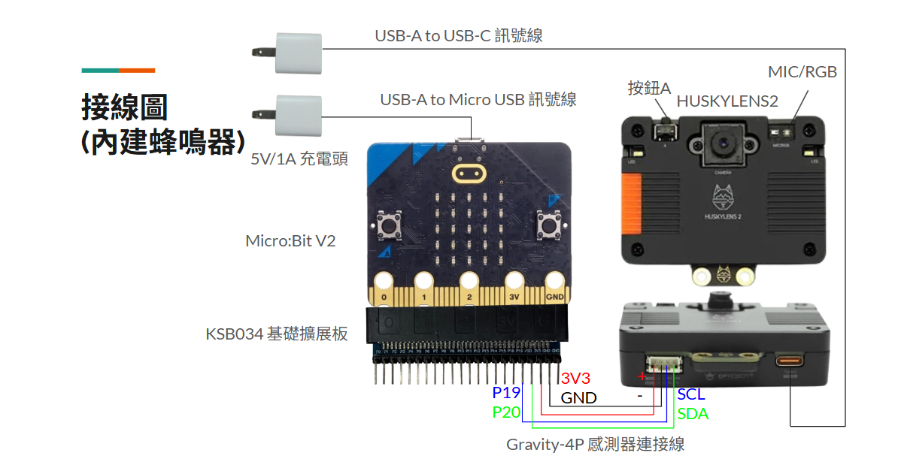
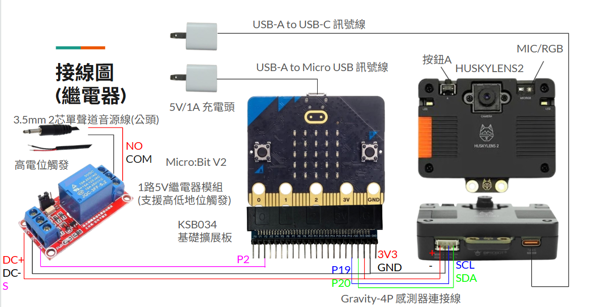
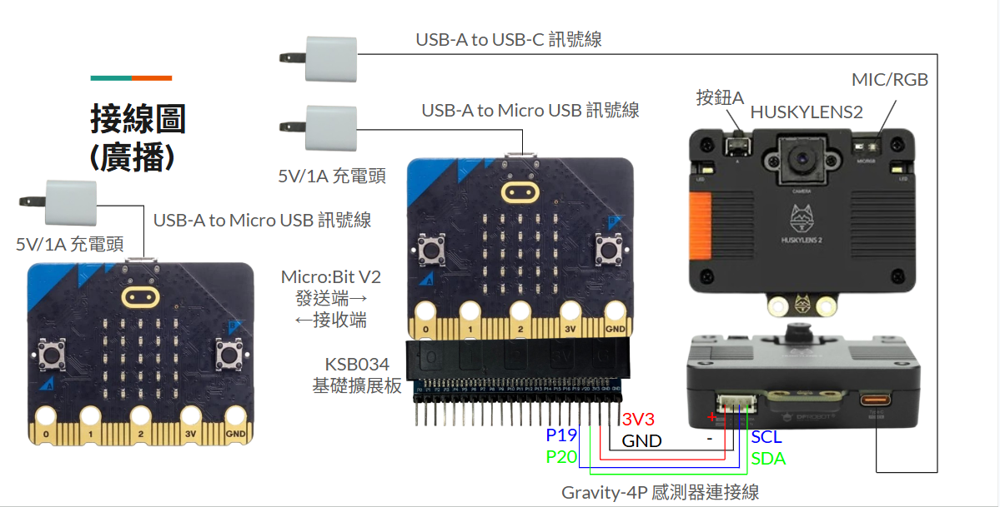
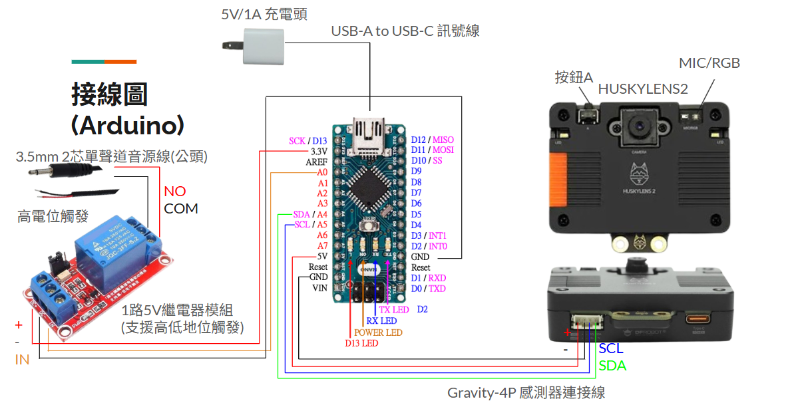

哈士奇 使用哈士奇鏡頭偵測使用者『看特定方向的次數』，再以 Arduino (或 Micro:bit）判斷後自動發出嗶嗶聲、開啟開關或發送廣播，呼叫照顧者幫忙
內建蜂鳴器版 - 接線圖

哈士奇眼控叫人鈴材料(內建蜂鳴器)
- HUSKYLENS2 1台
- Gravity-4P 感測器連接線 1條 ※購買HUSKYLENS2會附，購買前留意
- Micro:Bit V2 1片
- KSB034 基礎擴充板
- USB-A TO Micro USB 訊號線 1條
- USB-A TO USB-C 訊號線 1條
- 5V/1A充電頭 2個
- 充電電池模組(KS B040) 1個 ※可選
繼電器版 - 接線圖

哈士奇眼控叫人鈴材料(繼電器)
- HUSKYLENS2 1台
- Gravity-4P 感測器連接線 1條 ※購買HUSKYLENS2會附，購買前留意
- Micro:Bit V2 1片
- KSB034 基礎擴充板
- USB-A TO Micro USB 訊號線 1條
- USB-A TO USB-C 訊號線 1條
- 5V/1A充電頭 2個
- 充電電池模組(KS B040) 1個 ※可選
- 1路5V繼電器模組(支援高低地位觸發) 1個
- 3.5mm 2芯單聲道音源線(公頭) 1個
廣播版 - 接線圖

哈士奇眼控叫人鈴材料(廣播)
- HUSKYLENS2 1台
- Gravity-4P 感測器連接線 1條 ※購買HUSKYLENS2會附，購買前留意
- Micro:Bit V2 2片(1台接收、1台傳送)
- KSB034 基礎擴充板
- USB-A TO Micro USB 訊號線 2條
- USB-A TO USB-C 訊號線 1條
- 5V/1A充電頭 3個
- 充電電池模組(KS B040) 2個 ※可選
Arduino 版 - 接線圖

哈士奇眼控叫人鈴材料(Arduino)
- HUSKYLENS2 1台
- Gravity-4P 感測器連接線 1條 ※購買HUSKYLENS2會附，購買前留意
- Arduino nano V3 1片 ※可選購Type-C電源版
- USB-A TO Micro USB 訊號線 或 USB-A TO USB-C 訊號線 1條 ※依購買的Arduino 版本而定
- 5V/1A充電頭 1個
- 1路5V繼電器模組(支援高低地位觸發) 1個
- 3.5mm 2芯單聲道音源線(公頭) 1個
- 杜邦線2.54mm(母對母) 3條